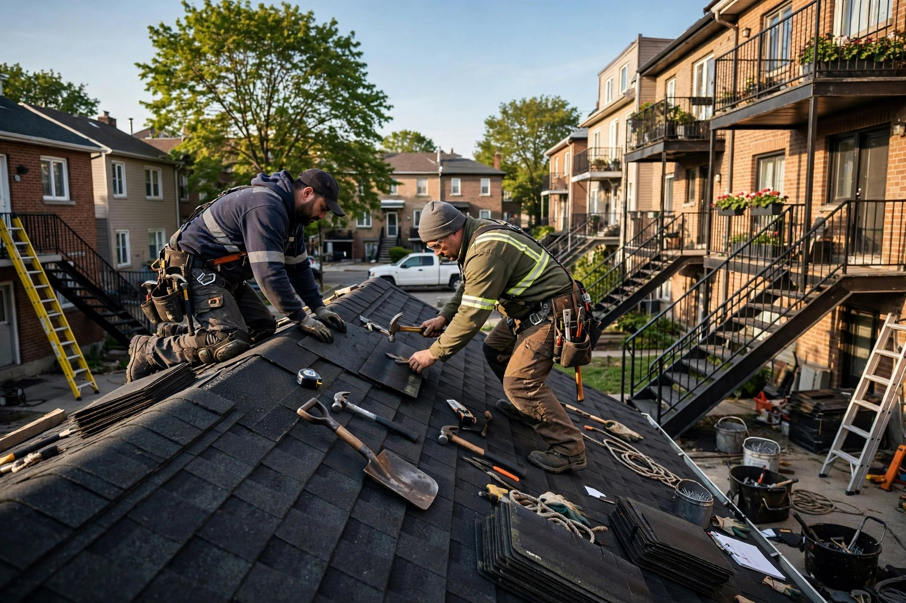
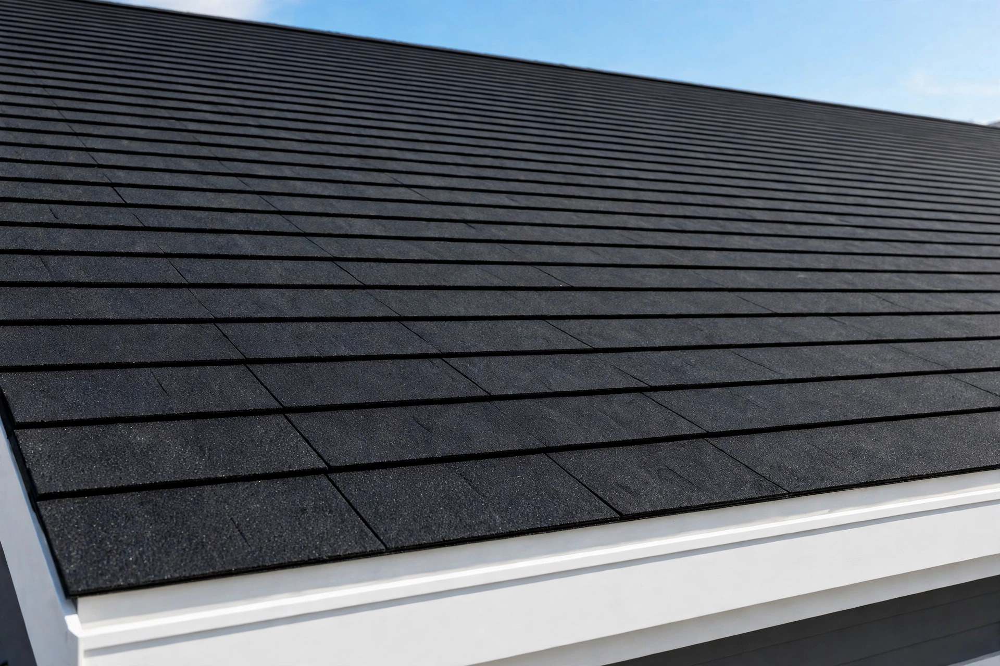
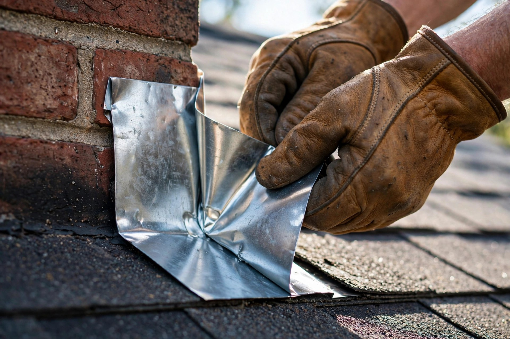
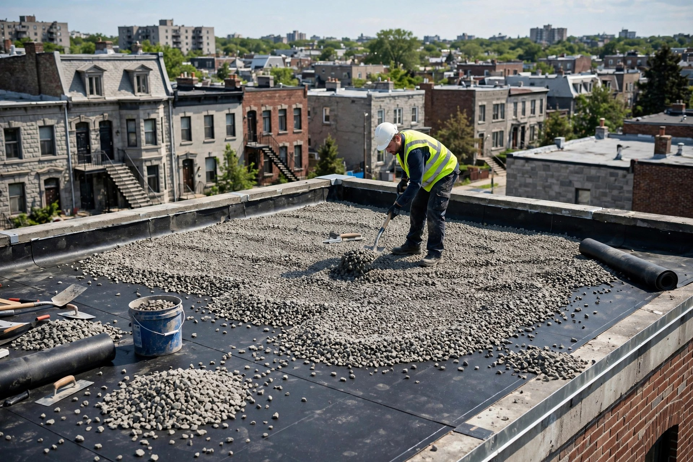

Bardeaux d'asphalte
Pose et remplacement de bardeaux d'asphalte — le classique qui dure.

Montréal, QC · Couvreurs · Résidentiel et commercial
Bardeaux d'asphalte, toiture en gravier et ferblanterie. Couvreurs à Montréal pour le résidentiel et le commercial.
Soumission gratuite
Bardeaux d'asphalte, gravier et ferblanterie à Montréal. Un appel et on se déplace.
Ce que nous faisons
Pose et remplacement de bardeaux d'asphalte — le classique qui dure.
Toitures de gravier et asphalte pour toits plats — étanches et durables.
Ferblanterie et finition de toit : solins, fascias et détails bien ajustés.
Réfection complète ou partielle de votre toiture, bien faite du premier coup.
Réparations de toiture de tout genre — on diagnostique et on répare.
Maisons et bâtiments commerciaux — même rigueur sur chaque chantier.

Pourquoi nous choisir
Un toit, ça protège tout ce qui est en dessous. On travaille proprement et on vous explique ce qu'on fait, avant et pendant le chantier.
Nos chantiers


Contact direct
Bon à savoir
Bardeaux d'asphalte, toiture en gravier et ferblanterie — pour le résidentiel et le commercial.
Oui — maisons et bâtiments commerciaux, à Montréal et les environs.
Oui — réparations de toiture de tout genre. Appelez le 514 486-0535 pour prendre rendez-vous.
Oui — licence RBQ 8110-1180-23.
Appelez-nous